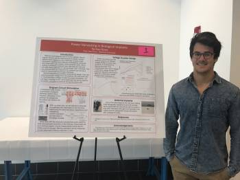
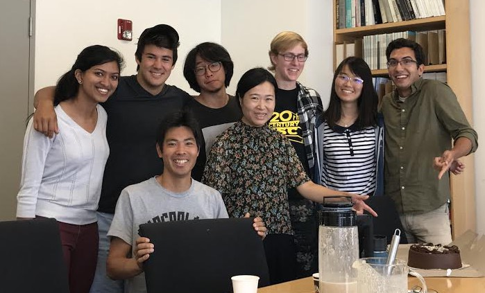

MemRx
Restoring memories for alzheimers.
The summer of 2017 I did research at Stanford under Professor Ada Poon (lab here). I was working on a team developing a wireless brain chip that can track and restore memories for alzheimers. I was part of the Stanford EE REU program (electrical engineering research for undergraduates) and I learned a LOT.
The science:
The brain doesn't work like a computer. One of the things that has made it very hard to understand is its plasticity: areas of logic processing aren't as concrete or divided as they are in a CPU. Long term memories are stored in the brain through engram circuits, a pathway of neurons that connect different parts of the brain. Initially, these circuits are mapped using the hippocampus as a base, and over time the pathways in the cerebrum srengthen and the hippocampus is no longer needed. If you've heard of H.M., the man that had his hippocampus removed, this was why he was able to retain his memories from before his surgery but afterwards was unable to form long term memories. Basically, what we're trying to do is create a wireless chip that can record and recover memories in at-risk prealzheimers patients. The chip is implanted into the hippocampus and can record these engram circuits while the memories are still intact. Then, if they start to fade we can activate those pathways using the same electrodes that were used to record them. This should be able to "bring back" the memory. Obviously this is very early stage research and we're currently trying to create a proof-of-concept design for mice. This is the next step to making treatment methodology applicable to humans (current research has shown promising results using optogenetics, but is limited by specificity and the need for transgenic neurons).
The learning:
First of all, being in the lab with a bunch of really intelligent and accomplished people was overwhelming to say the least. I was by far the most useless person in the room, which was both a little stressful and really great. There were definitely moments of discomfort where I felt like I was in over my head, but that discomfort was ultimately what let me dive in headfirst into the material and learn as much as I can. I was reading all these different papers on the brain, going to mice experiments, modeling circuits in Cadence, and building/analyzing tiny diodes, doublers, and rectifiers. I learned a completely different set of skills than I was used to working with in typical electrical engineering classes.